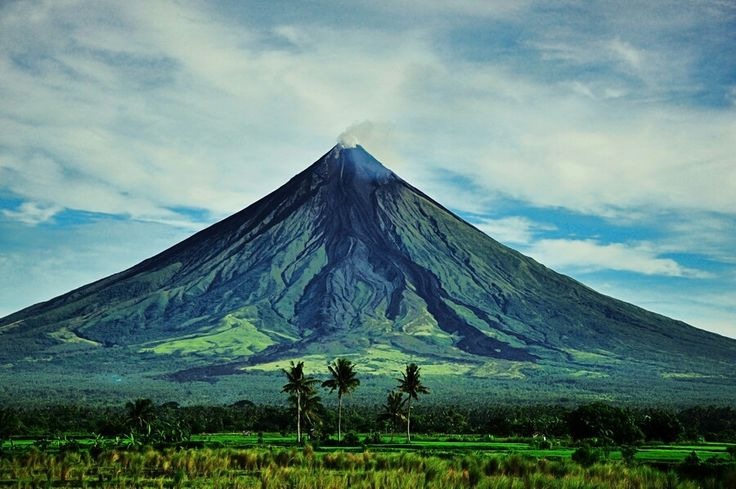
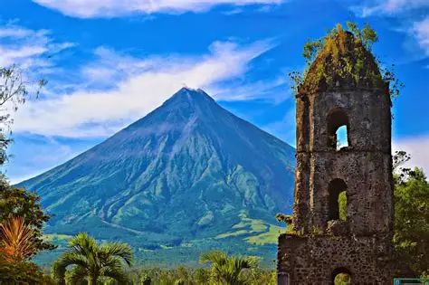
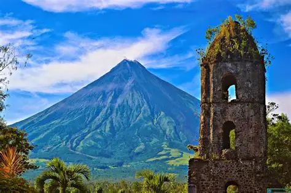
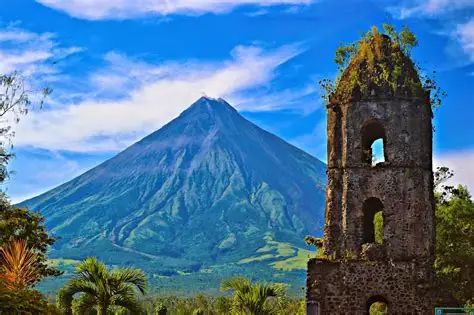
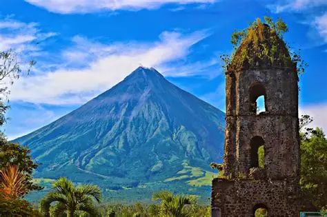

 




“Where Nature’s Beauty, Fiery Flavors, and Culture Unite.”
The Bicol Region, officially known as Region V, is located in the southeastern part of Luzon. It is composed of six provinces—Albay, Camarines Norte, Camarines Sur, Catanduanes, Masbate, and Sorsogon—with Legazpi City as the regional center. Known for its majestic Mayon Volcano, the region offers breathtaking natural wonders such as white sand beaches, waterfalls, and scenic islands. Bicol is also famous for its spicy cuisine, especially the iconic Bicol Express and Laing. Beyond its natural beauty, the Bicolanos are known for their deep faith, warm hospitality, and colorful festivals that showcase the region’s rich culture and heritage.
